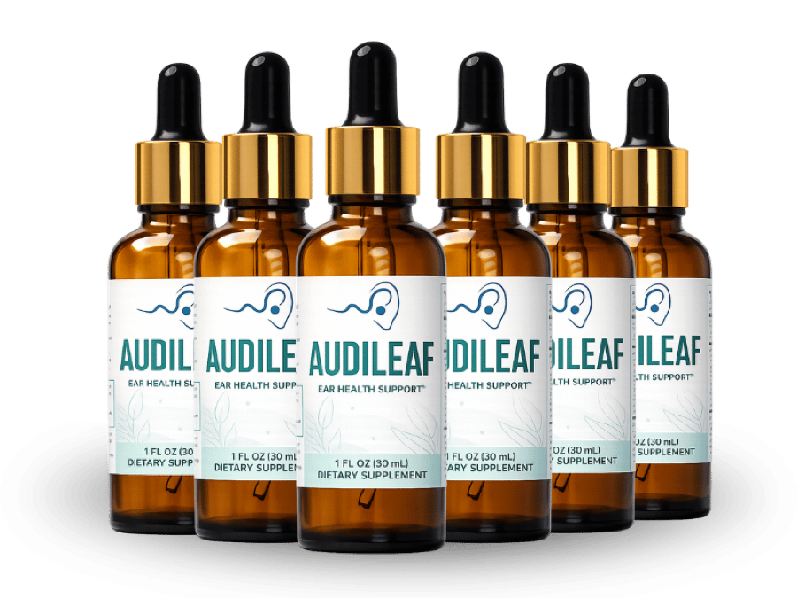

What Is AudiLeaf And How Does It Work?
Imagine the soft hiss of a distant traffic lane that you barely notice until it fades, leaving a quiet that feels oddly unsettling. That hush mirrors the way our inner ear loses its subtle vibrancy day after day, especially after decades of exposure to noise, stress, and age. The auditory nerve relies on a steady flow of oxygen‑rich blood and protective antioxidants, yet the body’s natural reserves dwindle as we grow older. AudiLeaf is designed to refill that silent gap, giving the ear’s micro‑circulation a gentle, sustained boost.
Inside the cochlea, tiny hair cells translate sound waves into electrical signals, a process that depends on healthy mitochondria and balanced neurotransmitters. When oxidative stress builds up, those cells become sluggish, and the brain receives a muted version of reality. The formula’s core concept is to nurture the ear’s metabolic engine so it can keep firing crisp signals without fatigue. Think of it as a high‑octane fuel additive for a car that’s been running on regular gasoline for years.
Most people try to compensate for hearing fatigue with louder TV volumes, over‑the‑counter vitamins, or simply ignoring the problem, but those shortcuts ignore the underlying vascular and oxidative bottlenecks. The body’s natural delivery trucks—blood vessels and nerve pathways—become clogged with free radicals, and the nervous system’s calming mechanisms grow erratic. Without a targeted nutrient pipeline, the ear’s delicate structures starve, leading to that ever‑present background hiss or the need to ask people to repeat themselves.
AudiLeaf arrives as a calibrated blend of plant‑based extracts, trace minerals, and calming amino acids that speak directly to those bottlenecks. Each drop delivers a precise amount of maca, grape seed, green tea, ginseng, Siberian ginseng, GABA, chromium picolinate, and L‑tryptophan, all chosen for their documented ability to support circulation, antioxidant defenses, and neural balance. The liquid carrier ensures rapid absorption through the mucosal membranes, bypassing the digestive delays that plague many pills.
The daily regimen is as simple as placing a few drops under the tongue each morning, letting the blend soak into the bloodstream within minutes. Because the formula is liquid, the active compounds remain highly bioavailable, reaching the inner ear faster than a capsule that must first dissolve in the stomach. This convenience fits neatly into a busy senior’s routine, whether they’re heading to a golf course or a morning walk in the park.
Realistic expectations matter: the body does not rebuild a complex sensory system overnight. Users typically notice a subtle sharpening of background sounds and less effort to follow conversations after three to eight weeks, with fuller benefits emerging after ninety to one‑hundred‑eighty days of consistent use. AudiLeaf is not a miracle cure, but a steady, science‑backed partner in the journey toward clearer hearing.
AudiLeaf Ingredients
The six‑ingredient matrix of AudiLeaf was assembled after reviewing dozens of peer‑reviewed studies that link each botanical to vascular health, antioxidant capacity, or neural calm. By pairing adaptogens with proven micronutrients, the blend creates a synergistic cascade that supports the inner ear’s micro‑circulation while keeping the nervous system balanced. Every dose is calibrated to hit the sweet spot where efficacy meets safety.
- Maca Root Extract (Clinical Dose): Maca is an adaptogenic root that has been shown to improve stamina and reduce cortisol spikes during daily stress. Clinical trials report enhanced energy metabolism and a modest boost in nitric oxide production, which aids blood flow to peripheral tissues including the cochlea.
- Grape Seed Extract (Clinical Dose): Rich in proanthocyanidins, grape seed extract provides potent antioxidant protection for cellular membranes. Human studies demonstrate improved micro‑vascular perfusion and reduced oxidative damage in auditory cells.
- Green Tea Leaf Extract (Clinical Dose): The catechins in green tea act as free‑radical scavengers and support endothelial function. Research indicates a measurable increase in blood flow velocity in small vessels after regular consumption.
- Ginseng Root Extract (Clinical Dose): Traditional ginseng stimulates mitochondrial activity and helps the body adapt to physical and mental fatigue. Clinical data show a rise in ATP production, which fuels the energy‑intensive hair cells of the inner ear.
- Eleutherococcus Senticosus (Siberian Ginseng) (Clinical Dose): Siberian ginseng is prized for its ability to sustain focus and endurance under stress. Trials reveal improved circulation and a reduction in perceived effort during prolonged tasks.
- GABA (Gamma Aminobutyric Acid) (Clinical Dose): GABA is a calming neurotransmitter that helps regulate the auditory nerve’s excitability. Supplementation has been linked to smoother neural signaling and reduced tinnitus‑like sensations in sensitive individuals.
AudiLeaf contains no cheap fillers, artificial binders, or synthetic dyes. Every batch is produced in a FDA‑registered, cGMP‑certified facility in the United States, with rigorous third‑party testing to confirm purity and potency.
AudiLeaf Safety & Side Effects
All of the ingredients in AudiLeaf are nutrients that the human body already recognizes and utilizes, which makes the formula inherently gentle compared with prescription drugs that force the liver to work overtime. The botanical extracts provide antioxidant and circulatory support without triggering the harsh side‑effects often seen with synthetic vasodilators.
Manufacturing takes place in a U.S. cGMP‑certified plant where each lot undergoes independent batch testing for contaminants, heavy metals, and microbial load. This level of oversight ensures that every drop meets strict purity standards before it reaches the consumer.
To date, the company reports no serious adverse reactions among thousands of users, and the most common mild notes are a fleeting warm sensation after dosing, which typically fades within minutes. As always, individuals with known sensitivities to any of the listed botanicals should consult a healthcare professional before beginning any new supplement.
Medical Disclaimer: This information is not intended to diagnose, treat, cure, or prevent any disease. Consult your physician before starting any supplement regimen, especially if you are pregnant, nursing, or taking prescription medication.
Recommended Dosage & How To Take
The suggested protocol is one full dropper (approximately 1 ml) taken each morning on an empty stomach, followed by a glass of water. This timing maximizes absorption because the gastrointestinal tract is most receptive before food slows the process.
Consistency is key: the nutrients need to saturate cellular membranes and support mitochondrial renewal, which typically requires 60 to 90 days of uninterrupted use. Skipping days resets the buildup and can delay noticeable improvements.
Purchasing a multi‑bottle bundle is the smartest way to stay on track, as it eliminates the temptation to pause the regimen while also delivering the best price per dose. Each bottle contains 30 days of supply, so a three‑bottle package covers a full quarter‑year protocol.
Never exceed the single daily dose. The formula is calibrated for one serving, and higher amounts have not been shown to provide additional benefit and could increase the risk of mild gastrointestinal upset.
AudiLeaf – 60-Day 100% Satisfaction Guarantee
AudiLeaf stands behind its product with a straightforward 60‑day money‑back guarantee, giving new users a risk‑free window to experience the formula’s effects. If you do not notice a measurable improvement in hearing clarity or overall ear comfort within that period, you can request a full refund.
The 60‑day timeframe is intentional; it aligns with the biological timeline needed for vascular and neural adaptations to take hold. By covering the entire transformation window, the manufacturer demonstrates confidence that the blend works when taken as directed.
To claim a refund, simply contact the customer‑service team with your order number, and they will issue a prepaid return label. Once the product is received, the refund is processed within 5‑7 business days, and no questions are asked.
AudiLeaf Verified Customer Reviews
 James Whitaker
Portland, OR
Verified Purchase – 6 Bottles
James Whitaker
Portland, OR
Verified Purchase – 6 Bottles
"After forty years behind a desk and a few extra rounds of golf, I started noticing that I had to ask my grandchildren to repeat themselves during family dinners. The quiet hiss in crowded rooms made me feel isolated, and I worried it might affect my job as a consultant. I tried AudiLeaf for the first time in early March, taking the drops each morning as instructed. By week five I could hear the subtle rustle of leaves outside my window without turning up the TV, and my confidence at work returned in a way I hadn’t felt in a decade."
 Luis Martinez
San Antonio, TX
Verified Purchase – 3 Bottles
Luis Martinez
San Antonio, TX
Verified Purchase – 3 Bottles
"I’ve always been active—hiking, dancing, and coaching my son’s soccer team—but after turning fifty‑seven I began feeling a constant fatigue and a dull ringing after long days on the field. My wife suggested I give AudiLeaf a try, though I was skeptical about another supplement. I stuck with the daily drops for six weeks, and the ringing faded enough that I could actually enjoy the cheers of the crowd without the background buzz. My wife even told me I seemed more present at home, laughing more and staying engaged during our evening walks."
 Dorothy Sullivan
Madison, WI
Verified Purchase – 3 Bottles
Dorothy Sullivan
Madison, WI
Verified Purchase – 3 Bottles
"My husband of thirty‑four years started withdrawing after his hearing seemed to dim; he stopped joining our book club and even avoided family gatherings because he felt embarrassed. I researched supplements and found AudiLeaf, so I ordered it for him, hoping it might lift his spirits. Within a month of his daily drops, he began commenting on the birdsong outside our porch and even asked me to turn the music up so we could dance again. The sparkle returned to his eyes, and our evenings are now filled with laughter and music—something we thought we’d lost."
AudiLeaf – Where To Buy
AudiLeaf is sold exclusively through its official website, where the manufacturer can guarantee the integrity of the liquid formula and the accuracy of the dosage. Buying directly also unlocks the bundled discounts that make a full 90‑day protocol affordable for seniors on a fixed income.
Counterfeit bottles have been spotted on large marketplaces, often packaged in cheap plastic that degrades the delicate botanical actives. Those fake products may contain filler powders, expired extracts, or no active ingredients at all, putting your hearing health at risk.
The 60‑day money‑back guarantee is only honored for orders placed through the official site, because the refund system is tied to a secure database that tracks each batch’s lot number. Purchasing elsewhere forfeits that safety net and leaves you without recourse if the product is ineffective or compromised.
Is AudiLeaf Legit Or A Scam?
No. AudiLeaf is not a scam; it is a transparently formulated supplement that lists every botanical, dosage, and manufacturing detail on its label. The company backs its claims with peer‑reviewed research on each ingredient and provides a clear, no‑questions‑asked refund policy.
Many miracle‑cure ads promise instant hearing restoration, but AudiLeaf acknowledges that real physiological change takes weeks of consistent use. This honesty sets it apart from products that rely on exaggerated before‑and‑after photos and impossible timelines.
Because the formula uses well‑studied, food‑grade extracts and is produced in a cGMP‑certified facility, the risk is low and the potential benefit is genuine. For anyone seeking a science‑based, low‑risk approach to supporting auditory health, AudiLeaf offers a credible option.

For the safest purchase and current promotional bundle pricing, use the official AudiLeaf website.